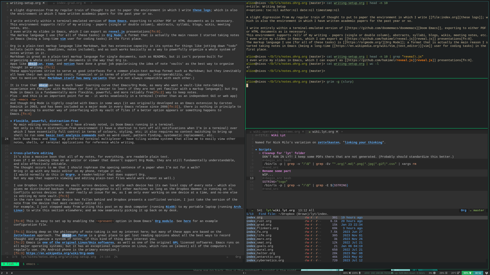
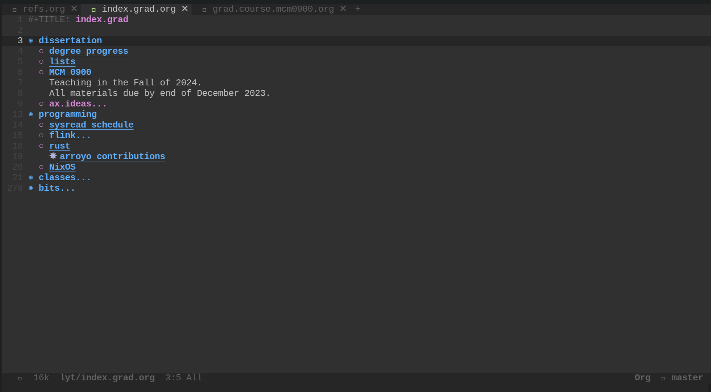
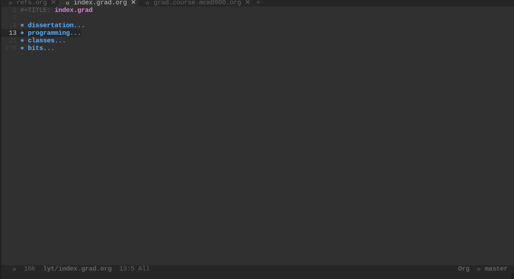

Writing Setup
1. Introduction
A slight digression from my regular train of thought to put to paper the environment in which I write these logs; which is also the environment in which I have written academic papers for the past year or so.
I write entirely within a terminal-emulated version of Doom Emacs, exporting to either PDF or HTML documents as is necessary. This environment supports all of my writing - papers (single or double column), abstracts, syllabi, blogs, wikis, meeting notes, etc. I even write my slides in Emacs, which I can export as reveal.js presentations1. The markup language I use (for all of these tasks) is Org Mode; a format that is actually the main reason I started taking notes in Emacs (being a long-time vim user for coding tasks) in the first place.
Org is a plain-text markup language like Markdown, but has extensive capacity in its syntax for things like jotting down “todo” bullets (with dates, deadlines, notes included), and as such works basically as a way to powerfully organize a whole system of notes written in it. Markdown is great as a plain-text markup language for single documents, such as READMEs, but it isn’t purpose-built for organizing a whole collection of documents in the way that Org is. Apps like obsidian, roam, and notion have done a great job popularising the idea of note ’vaults’ as the best way to organise thought in writing.2 These apps/systems strive to serve as good interfaces for a common plain-text markup format such as Markdown; but they inevitably all have their own quirks and costs, financial or in terms of platform support, interoperability, etc. (Not to mention that Markdown itself has many variants that are not always compatible with each other.)
It is true that obsidian has a much lower learning curve that Emacs/Org Mode, as many who want a vault-like note-taking experience are familiar with Markdown (or find it easier to learn if they are not yet familiar with a markup language); but Org Mode in Emacs is a fundamentally more flexible, powerful, and more reliably free3 way to keep notes.
Plus - and this is an important point for me - it works seamlessly in a terminal (rather than as an independent GUI or web app) via emacs -nw.
And though Org Mode is tightly coupled with Emacs in some ways (it was originally developed as an Emacs extension by Carsten Dominik in 2003, and has been included as a major mode in every Emacs release since 20064), there is nothing in principle to stop me moving to another way of interfacing with my vault of files if a better option appears or something happens to Emacs.5
2. Flexible, powerful, distraction-free
My main editing environment, as I have already noted, is Doom Emacs running in a terminal. Not only is this a distraction-free environment (I have a shortcut to turn off all notifications when I’m in a terminal) over which I have essentially full control in terms of colours, styling, etc; it also requires no context switching to bring up shell to run some basic text analysis commands such as word count, pattern finding, systematic replacement, etc. Both Doom Emacs and tmux - my preferred terminal multiplexer - have tiling window systems that allow me to easily view other notes, shells, or terminal applications for reference while writing.

This is certainly not the right setup for everyone. But for those of us who know and love the terminal, and who have already invested the time in basic proficiency in the shell-as-workstation - why use a specialized GUI app (or browser tab) for note-taking?
One essential feature of Org that I use extensively is its outlining and folding capabilities.
Every line starting with one or more * characters becomes part of a tree structure that can easily be expanded and contracted life a shelf.
As an example, here is one the “index” (entrypoint) documents I use for my life as a graduate student, first fully ’folded’, and then partially expanded:


This folding capability means that I can keep single documents that contain enormous lists (of running meeting notes, for example), yet still fluidly navigate to the section of the document relevant at any given time.
I have a general shelving structure for classes, for example, that contains top-level headings such as details, seminar, reading, assignments.
Each Org document is a continual work-in-progress that is frequently edited, updated, and re-organised.
3. Cross-platform editing
It’s also a massive boon that all of my notes, for everything, are readable plain text. Even if I am viewing them on an editor or viewer that doesn’t support Org Mode, they are still fundamentally understandable, and also effectively editable. The thought occurs to me that I should rephrase the opening sentence of a paper when I’m out for a walk? Bring it up with any basic editor on my phone, retype it out. (I would normally do this in Orgro, a reader/editor that does support Org. But any app that supports viewing and editing plain-text files would work almost as well.)
I use Dropbox to synchronize my vault across devices, so while each device has its own local copy of every note - which also gives me distributed backups - changes are propagated to all other machines so long as the Dropbox daemon is running on it. Conflicts across devices are never really an issue for me, as I am only ever working on one device at a time, and no-one else is editing my note vault.6 In the rare case that some device has fallen behind and Dropbox presents a conflicted version, I just take the version of the note from the device that most recently edited it. For example, I just stepped away from writing this post on my desk computer (running NixOS) to my portable laptop (running Arch Linux) to write this section elsewhere; and am now seamlessly picking it up back on my desk.
4. Multi-format export
This section is the real reason that my system works for all my writing needs. Extensive tooling has been developed over the years that allows one to export Org documents to a range of other formats. The important ones for me are PDF and HTML, though I also occcasionally use ODT (to get writing into a Google doc) and Markdown (for a README, say).
I can export any Org document as a PDF directly from Doom Emacs with a simple shortcut. The text goes to an intermediary LaTeX document, and then uses that technology to create the final PDF. Because of this intermediary LaTeX, I can use any LaTeX feature or package to format writing exported this way. Org has all of its basics built-in to the exporter - hyperlinks, bold/italics/underline, images, even its plain-text tables will end up beautiful by way of the LaTeX ecosystem.
The absolutely critical feature for my life as an aspiring academic is the support I have configured for citations. I manage all of my citations with Zotero, clipping books and articles from Google Scholar with its browser extension and then editing entries if needed in the Zotero app itself. (I don’t yet manage my Zotero library with a TUI; as I haven’t yet found one that works effectively. If you know of one that works well, please let me know!) I have the Better BibTeX extension for Zotero installed, which synchronises whatever I do in the app to a BibTeX file (similarly stored in Dropbox) that represents my library of possible citations when writing.
With all this in place, the magic of Doom Emacs (with the biblio module enabled) is ready to do its work. Perhaps I want to cite the following passage from Joan Copjec’s first book, Read My Desire: Lacan against the Historicists, in which she criticizes the misinterpretation of the psychoanalytic notion of ’the gaze’ in much of late 20th century film theory:
The gaze is conceived as a point constructed by the textual system of the film from which the subject is obliged to look; it is the condition of the possibility of the viewer’s vision. The gaze acts as a kind of key hold, the only opening into the visual pleasure the film affords.
Once I’ve typed or copied out the quote and noted the page number, I have a shortcut that brings up a shelf at the bottom of Emacs that presents me with all of my Zotero citations, and a fuzzy search bar.
Once I’ve filtered/selected one, I get something like this in the plain-text of my Org document: [cite:@copjecCutting2015].
I then insert the page number so it becomes [cite:@copjecCutting2015 p.41].
When the PDF exporter comes across syntax like this in my Org note, it becomes this: (Copjec 2015, 41).
If I add the line:
#+print_bibliography
anywhere in the document (as I have down the bottom of this one), the full listing of this citation will displayed, properly linked to the reference above, deduplicated (if there are multiple references to the same citation), and alphabetically ordered, etc.7
My system is configured to interpolate the appropriate bibliographic data for many kinds of export, most notably PDF and HTML.
This allows me to seamlessly transfer source text between papers, blogs, notes, slides, and any other kind of document I have in Org.
Here’s this post as a PDF, generated from exactly the same source text as the document you’re reading.
(All the bells and whistles of how exactly the PDF looks, how images are formatted, etc are configured using commands similar to #+print_bibliography in Org.
Here’s the Org plain-text of this post, if you’re interested in seeing a full example.)
5. Conclusion
As you can see from this post’s sections, I also make use of Org’s sectioning capabilities when writing. This is super handy for compartmentalising writing tasks and organising longer pieces, a method I use that is deeply inspired by John McPhee’s plain-text writing method in Kedit.
To see some examples of what I’ve produced recently using this system, check out some of the entries in my grad log. An example of a PDF product is this abstract that I recently submitted to a conference.
If you’re interested to know more about exactly how I set this up, refer to my Doom Emacs configuration. Though I don’t actively maintain this any longer (as I now mostly manage my configuration in Nix), it should give a workable example of how to get something similar on your computer, provided you already have Emacs installed. Don’t hesitate to reach out to me if you’re looking for some pointers.
6. Bibliography
Footnotes:
This is easy to set up by enabling the +present option in Doom Emacs’ Org module. See here for an example configuration file.
Diving deep on the philosophy of note-taking is not my interest here; but many of these apps are based on the Zettelkasten approach. The obsidian forum is a great place to get lost reading opinions about all the best ways to record thought and organize a system of notes, if this kind of thing does interest you.
Emacs is one of the original Linux/Unix softwares, as well as one of the original GPL licensed softwares. Emacs runs on all major operating systems; but it has an exceptional experience on Linux, which runs on (almost) all of the computers I regularly use. (My Android phone is the primary exception.)
I have periodically tinkered with obsidian with Org Mode plugins, or obsidian-like apps that support Org such as Logseq: but nothing so far matches the (terminal-based) experience of Org in Emacs itself.
If it were a collaborative note vault, I would need to institute a version control system like git if I wanted editing to remain distributed. But this is a different scope of problem. So collaborative editing in notion, roam, or obsidian cloud has always seemed like an unimportant - and potentially self-sabotaging - feature.
All these organisational schema for the bibliography can be customized according to different bibliographic standards, i.e. Chicago, MLA, etc.